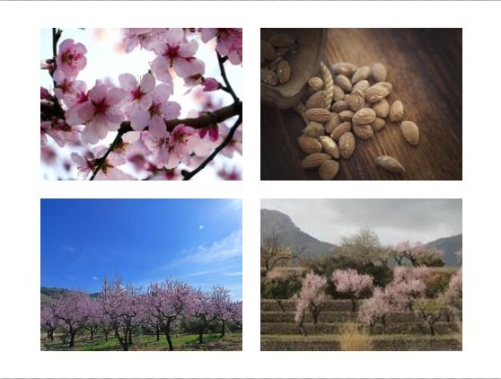

Seaside farmlands
Almonds
origin
The almond has its origin in the mountainous regions of Central Asia where it was cultivated from remote times (5000 to 4000 BC), and through trade routes, spread across all primitive civilizations. In Spain it was probably introduced by the Phoenicians. Its cultivation and trade was one of the largest sources of agricultural wealth of the Marina Alta during the 19th century, when they were exported massively to northern Europe, the United States and the United Kingdom.
Where to find them
In the topography of our region we find it in the interior areas, planted in terraces delimited by the traditional dry stone margins. Alcalalí located in Vall del Pop is the locality of the region where a greater number of almond fields, these account for 60% of agricultural production, although it is also grown in other numerous municipalities in the region. In recent years production is decreasing due to the plague of Xylella Fastidiosa, which is forcing farmers to uproot trees to prevent their spread.
Experiences
Flowering period: This period may vary depending on location, rainfall or temperatures of each period. It usually begins at the end of January, passing through the month of February and arriving even until mid-March, depending on the weather. During this period you can enjoy the beauty of the landscape in bloom and its special aroma. It is recommended to visit Alcalalí during the month of February, is when the fields look more splendour. Harvesting period: The ripening process of the fruit lasts until the end of August, when the harvest.